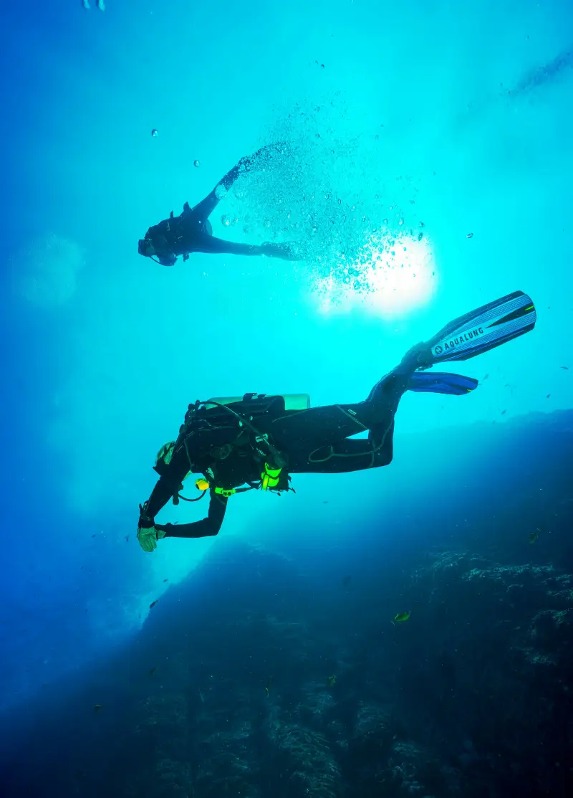
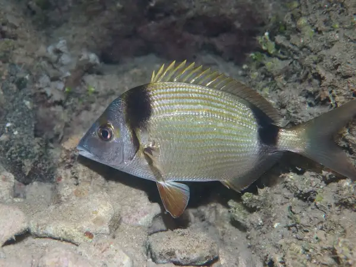
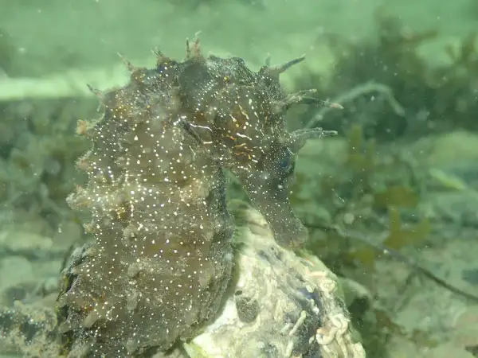
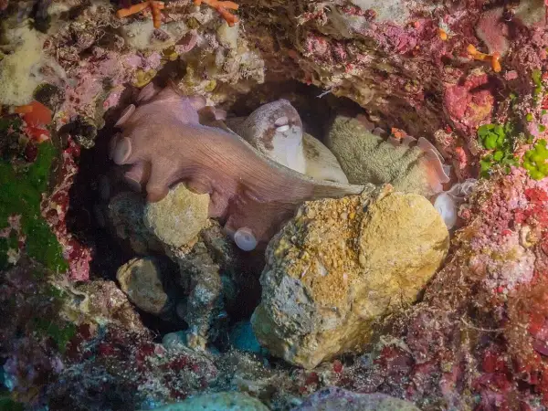
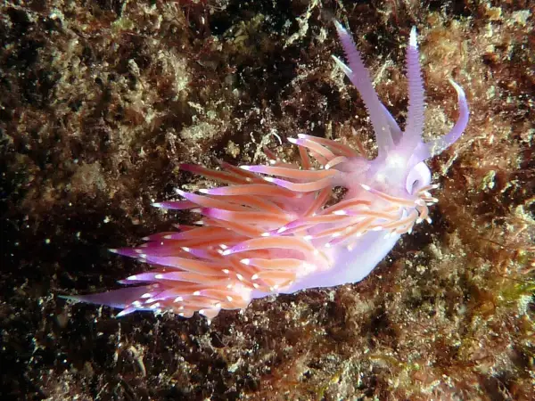
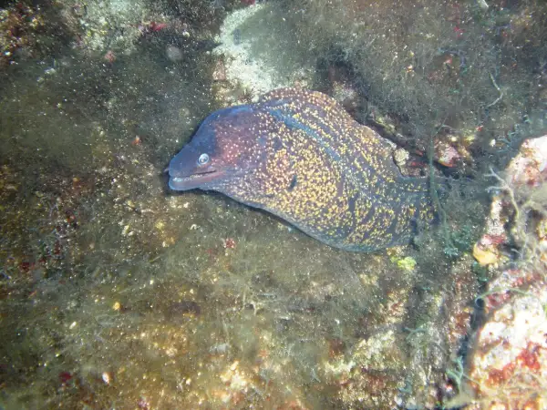
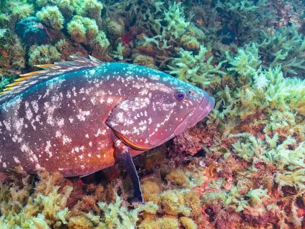
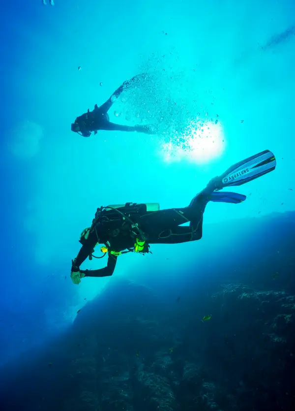
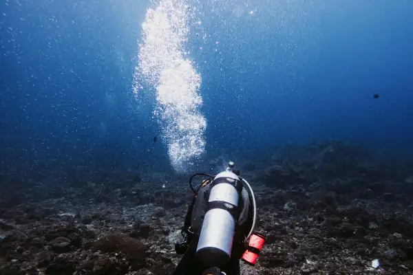
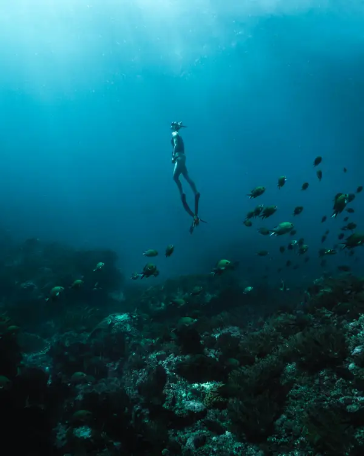

Centro PADI · Puerto de Fuengirola
Tu primera respiración bajo el mar.
Bautismos, cursos PADI y apnea desde nuestra base en el puerto de Fuengirola, con salidas diarias en barco y desde costa por la Costa del Sol.
4,9 · 301 reseñas en GoogleUn descenso de la superficie a 30 metros
-
0 m · Superficie
Empieza en el local 51 del puerto de Fuengirola.
Salidas diarias en barco y desde costa por Málaga, la Costa del Sol y Granada. En las salidas Go Dive el equipo está incluido.
-
−6 m · Primeras respiraciones
El bautismo: sin experiencia, sin titulación.
La experiencia más comentada en nuestras reseñas. Un instructor a tu lado todo el tiempo, a tu ritmo. Ideal también para familias y adolescentes.
-
−15 m · Una sola respiración
Apnea: −15 m con una sola respiración.
Objetivos del APNEA Diver: 120 s en estática, 30 m en dinámica y −15 m en peso constante. Empieza con el Intro APNEA.
-
−18 m · PADI Open Water
Tu licencia para bucear en todo el mundo.
La certificación PADI Open Water Diver te permite bucear hasta 18 m con un compañero, en cualquier lugar. La teoría puede hacerse online con PADI eLearning.
-
−30 m · Advanced Open Water
Más profundo, y rumbo a los pecios.
Con el Advanced Open Water llegas a 30 m. Después, Nitrox, Rescue y hasta Divemaster.
Empieza por tu primera inmersión
Vida mediterránea
Lo que verás aquí
Especies habituales del Mediterráneo andaluz, a la profundidad donde suelen vivir. Baja por la columna.
-

1–15 mMojarraDiplodus vulgarisEn grupos sobre las rocas; suele ser el primer pez que ves. -

3–15 mCaballito de marHippocampus guttulatusSe esconde entre las praderas marinas. Encontrarlo es un premio. -

5–25 mPulpoOctopus vulgarisMaestro del camuflaje: busca su madriguera entre las piedras. -

10–30 mNudibranquioFlabellina affinisUnos centímetros de violeta. Esta foto se tomó en La Herradura. -

10–30 mMorenaMuraena helenaAsoma de las grietas. Tranquila si respetas su espacio. -

15–40 mMeroEpinephelus marginatusEl rey del arrecife rocoso. Curioso, pausado, inolvidable.
Profundidades orientativas. Lo que ves en cada inmersión depende del punto y del mar; pregunta a la escuela. Fotos ilustrativas (Wikimedia Commons).
Tu primer día
Cinco momentos, una primera inmersión.
-
01 / 05
El briefing
Primero te lo explicamos todo: cómo respirar, las señales con las manos y qué vas a ver. Sin prisas.
-
02 / 05
El equipo
Traje, jacket, botella y aletas. Tu instructor revisa cada pieza contigo.
-
03 / 05
La entrada
Un paso de gigante y ya estás flotando. Desde el barco o desde la orilla, según la inmersión.
-
04 / 05
La primera respiración
Justo bajo la superficie, con el instructor al lado. La primera bocanada sorprende; la segunda ya es tuya.
-
05 / 05
De vuelta arriba
Subes despacio, inflas el jacket y miras abajo. Queda una pregunta: ¿cuándo la siguiente?
Reserva tu bautismo
Tres toques
¿Qué curso es para mí?
Responde con sinceridad y te decimos por dónde empezar. Siempre puedes preguntarnos.
Una escuela, una tarifa
Cursos y precios
Todo lo que estaba repartido en dos webs, ahora en un solo sitio. Los precios se están actualizando con la escuela.
-

Sin experiencia
Bautismo
Bautismo
Tu primera respiración bajo el agua
- Para: cualquiera, sin titulación
- Con un instructor a tu lado
- Familias y adolescentes bienvenidos
desde [por confirmar]
-

Titúlate
Open Water
PADI Open Water Diver
Tu licencia para el mundo
- Bucea hasta 18 m con compañero
- Teoría online con PADI eLearning
- Reconocida en todo el mundo
desde [por confirmar]
-

A pulmón
Apnea
Intro APNEA · APNEA Diver
Sin botella, solo tú
- Empieza con el Intro APNEA
- Objetivo APNEA Diver: 120 s estática
- 30 m dinámica · −15 m peso constante
desde [por confirmar]
Haz la teoría en casa: PADI eLearning (abre padi.com)
De Tarifa a Granada
Dónde buceamos
Toca un punto. Salidas diarias en barco y desde costa, también a pecios, desde nuestra base en Fuengirola.
Tu primera inmersión
Resérvala en menos de un minuto.
Elige, pon una fecha y dinos cuántos sois. Te confirmamos disponibilidad por WhatsApp. Aquí no se cobra nada.
- Escuela PADI en el puerto de Fuengirola
- 4,9 en Google con 301 reseñas
- Instructores pacientes, familias bienvenidas
Lo que más repiten nuestros buceadores
con 301 reseñas en Google
- 01
El bautismo
La experiencia más mencionada: gente que venía por primera vez y salió queriendo más.
- 02
Paciencia y tranquilidad
Instructores como Toni y Joaquín aparecen una y otra vez por enseñar con calma y claridad.
- 03
Familias y adolescentes
Padres e hijos adolescentes buceando juntos es un tema recurrente.
- 04
Open Water
Muchos de los que opinan se titularon aquí.
Resumen de temas recurrentes en las reseñas públicas de Google. Aquí podrían mostrarse las reseñas reales con un widget de Google.
Encuéntranos
Local 51, Puerto Deportivo de Fuengirola
Puerto Deportivo de Fuengirola, local 5129640 Fuengirola, Málaga Abrir en Google Maps